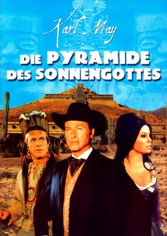
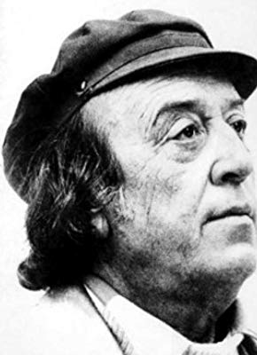

#375 Karl May 08 - Die Pyramide des Sonnengottes
Alternativ: Pyramid of the Sun God (Originaltitel)
 
 IMDB-Wertung: 5.2 / 10
IMDB-Wertung: 5.2 / 10  Metascore: 0
Metascore: 0 
Der Azteke Flathouani und sein Mündel, die Aztekenprinzessin Karja, finden den bewusstlosen Arzt Dr. Sternau vor dem Eingang ihrer Schatzhöhle. Sternau war im Kampf gegen den Banditen Verdoja einen Bergabhang hinuntergefallen. Karja pflegt Sternaus Wunden. In klaren Momenten kann er den Schatz der Azteken in der Höhle erkennen. Sternaus Freunde Andreas Hasenpfeffer, Leutnant Potoca und Frank Wilson sind auf der Suche nach ihm und können ihn aus den Händen der Indianer befreien. Sie bringen ihn zur Hazienda del Erina.
Jahr: 1965
Dauer: 98 Minuten
FSK: 12
Land: West-Deutschland Studio: Omnia Deutsche Film-ExportTonspuren:
Untertitel: Deutsch,
Auflösung: 1080p (1920x808) Größe: 6717 MB
Genre: Western, Abenteuer
Regisseur: Robert Siodmak
Drehbuch: Karl May, Ladislas Fodor, Robert A. Stemmle, Georg Marischka
Soundtrack: Erwin Halletz
Darsteller:
 Lex Barker als Dr. Karl Sternau
Lex Barker als Dr. Karl Sternau Jeff Corey als (uncredited
Jeff Corey als (uncredited- John Kirby als Bandit , uncredited
- Gérard Barray als Count Alfonso di Rodriganda y Sevilla
 Rik Battaglia als Captain Lazaro Verdoja
Rik Battaglia als Captain Lazaro Verdoja- Michèle Girardon als Josefa
- Alessandra Panaro als Rosita Arbellez
- Theresa Lorca als Karja
- Hans Nielsen als Don Pedro Arbellez
 Gustavo Rojo als Lieutenant Potoca
Gustavo Rojo als Lieutenant Potoca- Kelo Henderson als Frank Wilson
- Antun Nalis als Cortejo
- Ralf Wolter als Andreas Hasenpfeffer
-  Jean-Roger Caussimon als Marshall Bazaine , uncredited
- Aleksandar Djuric als Bandit , uncredited
- Willy Egger als Bazaine's Secretair , uncredited
- Marijan Habazin als Bandit , uncredited
- Branimir Tori Jankovic als Panteo , uncredited
- Nikola Milic als Bandit , uncredited
- Jovan Nikolic als Flathouani , uncredited
- Petar Obradovic als Pater Jacinto , uncredited
- Vladimir Popovic als Black Deer , uncredited
- Nada Radovic als Big India , uncredited
- Jovan Rancic als French Lieutenant , uncredited
- Rolf Rolphs als Alimpo , uncredited
 Fausto Tozzi als (uncredited
Fausto Tozzi als (uncredited
Datei: X:\Person\Karl May\Karl May 08 - Die Pyramide des Sonnengottes (1965, FSK12, 1920x808).mkv seit 20.02.2015
Festplatte: HD Collection-7+mehr(A-Z)+Person
 Es gibt insgesamt 20 Filme in der Gruppe 'Person\Karl May'
Es gibt insgesamt 20 Filme in der Gruppe 'Person\Karl May'